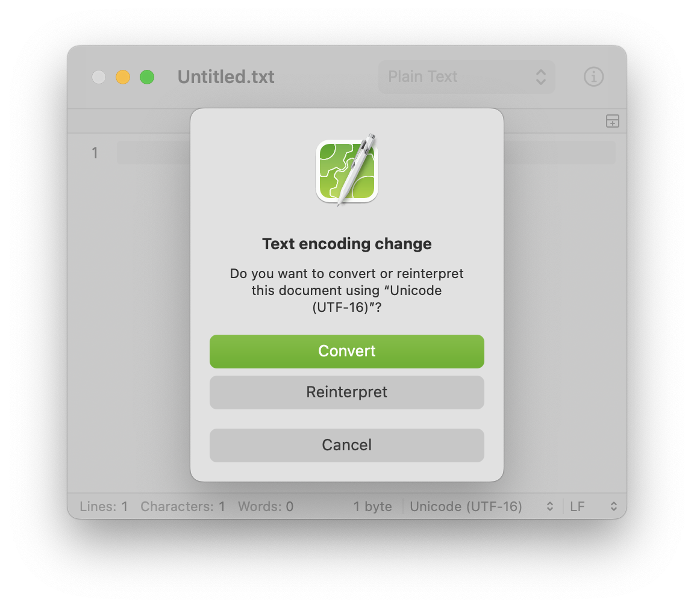

If characters aren’t displayed correctly
Characters can be garbled if CotEditor fails to detect the file’s text encoding correctly. In such cases, change the text encoding as described below:
- Choose Format > File Encoding, and then choose an encoding from the list.
- When a dialog appears, click Reinterpret.

The behavior of each button in this dialog is as follows:
- Converts the text from the current encoding to the new one.
- Reinterpret
- Reopens the file with the new encoding.
- Convert
- Cancel
- Cancels the operation. The document is left unmodified.
- You can also change the text encoding from the encoding menu in the status bar.
- Changing the priority of auto-detection may help to reduce the occurrences of garbled characters.
→ Set the priority of encoding auto-detection
- If you turn on “Refer to encoding declaration in document” in the Format preferences pane, in-document encoding declarations, such as “
encoding=” or “@charset,” will take precedence when CotEditor detects the text encoding.
→ Use encoding declarations for encoding detection